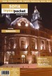

Disclaimer: These pages are not actively maintained, and some of the practical information on the site is out of date. I am working on a new version of the site that will focus more on my photos and memories of travel in Southeast Europe, and less on practical details that too easily become obsolete. In the meantime, please treat the information here with caution.
Bulgaria :: Books
Travel Guides
In addition to the country-specific guides listed here, Bulgaria is covered by Lonely Planet's regional guides to Southeastern Europe and Eastern Europe, and (briefly) in their Europe on a Shoestring guide.
 |
Bulgaria - The Bradt Guide (2nd edition published August 2015) - Annie KayI have not seen this book but given the out-of-dateness of the Rough Guide and the fact that Lonely Planet no longer produce a dedicated guide to Bulgaria, I might well give Bradt a try if I was going to Bulgaria now. |
More about this book: Amazon (USA)Amazon (UK) |
 |
The Rough Guide to Bulgaria (6th edition published June 2008) - Jonathan Bousfield, Dan RichardsonI relied on the Rough Guide on my trips to Bulgaria and found it very useful, with plenty of detail about out-of-the-way places and possible day trips from better-known destinations. As usual with Rough Guides there is also plenty of background information about culture and history. When this edition was published I recommended it without hesitation, but it appears that there have been no updates since 2008, so travellers may wish to consider more recent publications. |
More about this book: Amazon (USA)Amazon (UK) |
 |
Lonely Planet Romania and Bulgaria (6th edition published May 2013)Lonely Planet used to think that Bulgaria deserved a volume of its own, but these days it is combined with Romania. Less detailed than the Rough Guide, but published more recently. |
More about this book: Amazon (USA)Amazon (UK) |
 |
Walking in Bulgaria's National Parks (1st edition published February 2010) - Julian PerryA guide to 12 walking routes for fit and experienced hikers in the Pirin, Rila, and Central Balkans national parks. |
More about this book: Amazon (USA)Amazon (UK) |
|  |
Sofia In Your PocketThis regularly updated guide is packed with practical information about what to see, what to do, and how to do it in and around Sofia. It can be purchased locally, ordered through the website, or downloaded in PDF format. IYP also produces guides to Plovdiv, Burgas, and Veliko Tarnovo. |
More about this book: In Your Pocket |
Background Reading
A century ago Western journalists could become household names by reporting on Ottoman atrocities in Bulgaria, but since then it has been poorly served by writers in English - even by the standards of its Balkan neighbours. Of the books listed in the Overview section, both Exit Into History and Balkan Ghosts include chapters on Bulgaria - in each case attesting to the country's ability to inspire affection in those who do take the trouble to visit it.
Stealing from a Deep Place: Travels in South-Eastern Europe - Brian Hall
The author travelled by bicycle through Hungary, Romania and Bulgaria in 1982, when there were few hints that the Communist system would ever change. Despite a near-catastrophic mechanical failure and the attempts of the state bureaucracy to force him into soulless Balkanturist hotels, the Bulgarian chapters evoke a more relaxed atmosphere than the earlier Romanian sections. |
More about this book: Amazon (USA)Amazon (UK) |
|
 |
The Porcupine - Julian Barnes
A short novel about the trial of a former dictator in an unnamed ex-communist country rather similar to Bulgaria. |
More about this book: Amazon (USA)Amazon (UK) |